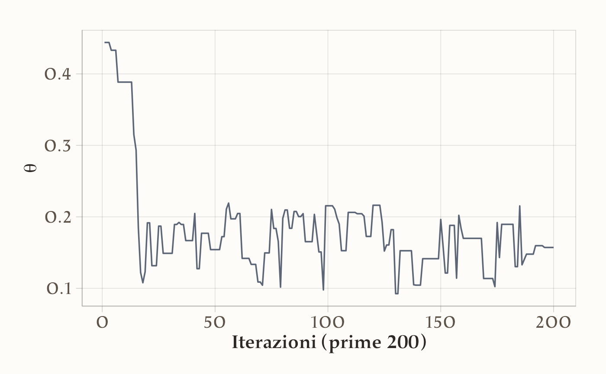
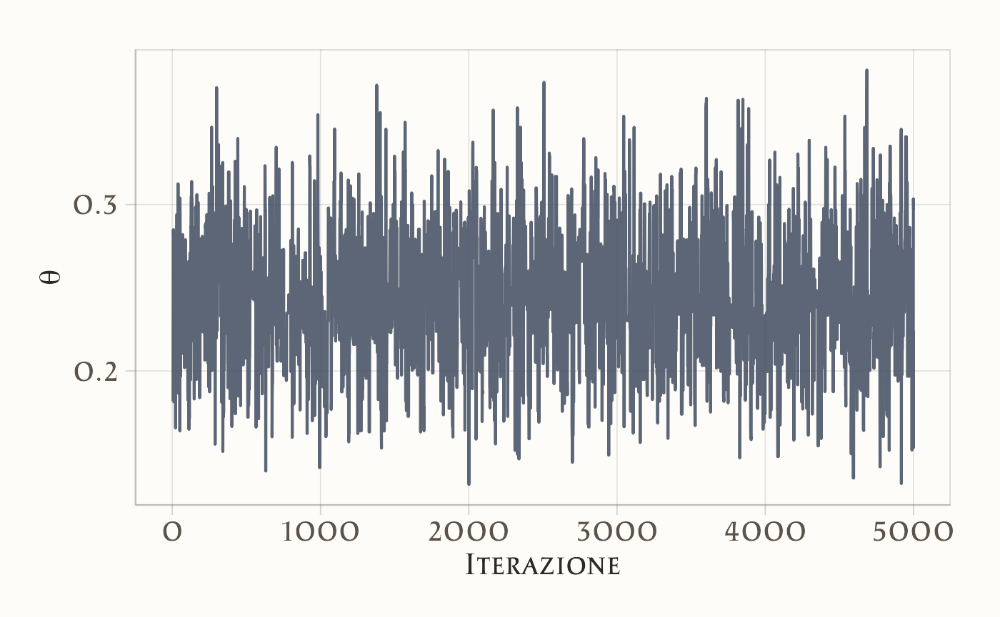

here::here("code", "_common.R") |>
source()
# Load packages
if (!requireNamespace("pacman")) install.packages("pacman")
pacman::p_load(cmdstanr, reshape2)48 L’algoritmo di Metropolis-Hastings
Introduzione
Nei capitoli precedenti abbiamo visto che l’inferenza bayesiana può essere risolta esattamente in alcuni casi fortunati, grazie alle famiglie coniugate, oppure approssimata con metodi semplici come l’uso di una griglia di valori. Questi strumenti ci hanno permesso di comprendere a fondo la logica dell’aggiornamento bayesiano, ma hanno anche mostrato chiaramente i loro limiti: i casi coniugati sono eccezioni, e l’approccio su griglia diventa rapidamente impraticabile quando il numero di parametri cresce oltre uno o due. Per affrontare problemi realistici, che in psicologia riguardano quasi sempre modelli con più parametri e strutture complesse, dobbiamo introdurre un metodo generale che ci consenta di ottenere campioni dalla distribuzione a posteriori senza doverla calcolare in forma chiusa. Questo metodo esiste, ed è noto come algoritmo di Metropolis (Hastings, 1970; Metropolis et al., 1953).
L’algoritmo di Metropolis rappresenta una svolta concettuale: offre una soluzione universale per generare campioni dalla distribuzione a posteriori, indipendentemente dalla forma della verosimiglianza e del prior. In questo senso, risolve in modo definitivo il problema di come rendere praticabile l’inferenza bayesiana. Tuttavia, presenta anche due limiti: è relativamente inefficiente dal punto di vista computazionale e richiede di scrivere codice su misura per ogni modello. Nonostante ciò, la sua logica è così generale e potente che costituisce la base di tutti gli algoritmi moderni di campionamento, incluso il metodo NUTS implementato in Stan.
In questo capitolo introdurremo passo dopo passo l’algoritmo di Metropolis, ne vedremo il funzionamento intuitivo e lo applicheremo a casi concreti. Questo ci permetterà di capire la logica alla base di gran parte dell’inferenza bayesiana moderna, che rimane immutata anche nei metodi più sofisticati.
Panoramica del capitolo
- Utilizzare metodi Monte Carlo per stimare valori attesi e probabilità, evitando calcoli integrali complessi.
- Comprendere il ruolo delle catene di Markov nel campionamento dalla distribuzione a posteriori.
- Implementare l’algoritmo di Metropolis per il campionamento a posteriori.
- Valutare la convergenza delle catene con strumenti diagnostici come trace plot e autocorrelazione.
- Gestire la fase di burn-in e utilizzare più catene per garantire stazionarietà e ridurre l’autocorrelazione.
48.1 L’obiettivo del metodo MCMC
Il metodo MCMC è un approccio computazionale che consente di approssimare distribuzioni di probabilità complesse, generando una sequenza di valori campionati che seguono la distribuzione a posteriori di interesse.
L’idea di base è la seguente:
- consideriamo la distribuzione a posteriori come una popolazione da cui desideriamo estrarre campioni;
- generando un numero sufficientemente grande di campioni (ad esempio, diverse migliaia), la distribuzione empirica dei campioni ottenuti si avvicina progressivamente alla distribuzione teorica a posteriori;
- in questo modo, possiamo stimare quantità di interesse, come la media, la varianza, o intervalli di credibilità, anche senza conoscere una forma analitica esplicita della distribuzione a posteriori.
48.1.1 La natura dipendente del campionamento MCMC
A differenza delle tecniche di campionamento indipendente precedentemente esaminate, l’approccio MCMC genera una sequenza di valori correlati attraverso un meccanismo di transizione markoviana. La caratteristica distintiva di questo processo risiede nella proprietà di Markov: ogni nuovo campione dipende esclusivamente dallo stato corrente della catena, mostrando memoria soltanto a breve termine piuttosto che dipendenza dall’intera storia precedente.
Questa architettura sequenziale produce inevitabilmente autocorrelazione tra osservazioni adiacenti. Quando la catena visita una regione ad alta densità della distribuzione target, tenderà a persistere in tale zona per diverse iterazioni prima di migrare verso altre regioni. Mentre tale comportamento è funzionale all’esplorazione efficiente dello spazio parametrico, introduce importanti considerazioni pratiche:
- l’informazione effettiva contenuta in \(N\) campioni correlati è inferiore a quella di \(N\) campioni indipendenti;
- la valutazione della convergenza richiede analisi diagnostiche specifiche;
- la dimensione efficace del campione (ESS) diventa un parametro cruciale per la qualità dell’inferenza.
Per compensare questa riduzione di informazione per campione, è generalmente necessario generare sequenze più lunghe rispetto al campionamento indipendente. Tuttavia, questo svantaggio apparente è ampiamente compensato dalla capacità di MCMC di affrontare problemi complessi che risulterebbero intrattabili con metodi tradizionali.
48.1.2 Perché utilizzare MCMC
Il metodo MCMC è diventato uno strumento centrale nell’inferenza bayesiana contemporanea perché:
- è in grado di affrontare problemi complessi, caratterizzati da distribuzioni a posteriori di forma irregolare o definite in spazi ad alta dimensione;
- non richiede il calcolo diretto dell’integrale di normalizzazione che compare nel teorema di Bayes;
- permette di ottenere approssimazioni accurate della distribuzione a posteriori tramite simulazione numerica.
Nel seguito ci concentreremo sull’algoritmo di Metropolis, uno dei metodi più semplici ed essenziali per implementare il campionamento MCMC.
48.2 L’algoritmo di Metropolis: introduzione intuitiva
L’algoritmo di Metropolis è un metodo MCMC che consente di esplorare una distribuzione di probabilità complessa costruendo una sequenza di campioni dipendenti tra loro.
La logica dell’algoritmo può essere riassunta nei seguenti passaggi fondamentali:
- Punto di partenza: si inizia da un valore iniziale \(\theta_0\) scelto arbitrariamente.
- Proposta di un nuovo punto: si genera un nuovo valore candidato \(\theta^*\) partendo da \(\theta_0\), utilizzando una distribuzione di proposta (ad esempio una distribuzione normale centrata su \(\theta_0\)).
- Valutazione della proposta: si confrontano le densità a posteriori associate al valore attuale \(\theta_0\) e al valore proposto \(\theta^*\).
-
Decisione di accettazione:
- se \(\theta^*\) ha una densità a posteriori più alta di \(\theta_0\), viene accettato automaticamente;
- se \(\theta^*\) ha una densità a posteriori inferiore, viene accettato con una certa probabilità proporzionale al rapporto delle densità.
- Registrazione: in ogni caso, si registra la posizione attuale (sia che si sia accettato un nuovo punto, sia che si sia rimasti fermi).
Questo processo viene ripetuto per un numero elevato di iterazioni, generando una catena di campioni che, dopo un opportuno periodo iniziale (detto burn-in), approssima la distribuzione a posteriori.
48.3 Perché accettiamo anche mosse peggiori
Uno degli aspetti peculiari dell’algoritmo di Metropolis è la possibilità di accettare anche proposte peggiori, ossia punti \(\theta^*\) associati a una densità a posteriori minore rispetto allo stato attuale.
Questa scelta ha una motivazione fondamentale:
- se accettassimo solo le mosse che migliorano la densità, l’algoritmo rischierebbe di bloccarsi in un massimo locale della distribuzione, senza esplorare altre aree che, pur avendo densità più bassa localmente, potrebbero condurre a regioni più interessanti globalmente;
- accettare occasionalmente mosse peggiori consente all’algoritmo di esplorare meglio tutto lo spazio dei parametri, evitando di rimanere intrappolato in una singola area.
In questo modo, la catena può attraversare regioni di bassa probabilità e raggiungere altre modalità della distribuzione, garantendo una copertura più completa dello spazio delle soluzioni plausibili.
48.4 La scelta della larghezza della proposta
Nell’algoritmo di Metropolis, la proposta di un nuovo valore \(\theta^*\) viene solitamente generata a partire dallo stato corrente \(\theta_t\) utilizzando una distribuzione di proposta simmetrica, ad esempio una distribuzione normale \(\mathcal{N}(\theta_t, \tau^2)\), dove \(\tau\) rappresenta la deviazione standard della proposta.
La scelta del valore di \(\tau\) (ovvero della larghezza della proposta) è cruciale per il buon funzionamento dell’algoritmo:
- se \(\tau\) è troppo piccolo, i passi proposti saranno molto vicini al punto attuale. In questo caso, molte proposte saranno accettate, ma la catena si muoverà lentamente nello spazio dei parametri, esplorandolo inefficientemente (alta correlazione tra i campioni);
- se \(\tau\) è troppo grande, i passi proposti saranno molto lontani dal punto attuale. In questo caso, la maggior parte delle proposte cadrà in regioni di bassa densità, portando a un alto tasso di rifiuto delle proposte e quindi a una scarsa efficienza del campionamento.
Un valore ottimale di \(\tau\) deve bilanciare:
- accettazione sufficiente di nuove proposte;
- esplorazione efficiente dello spazio dei parametri.
In generale, si cerca di ottenere un tasso di accettazione compreso tra il 40% e il 50% per l’algoritmo di Metropolis a singolo parametro.
48.5 L’importanza dei grafici diagnostici: Trace plot e Correlogramma
Per valutare la qualità della catena generata dall’algoritmo di Metropolis, è fondamentale analizzare alcuni grafici diagnostici.
48.5.1 Trace plot
Il trace plot rappresenta i valori campionati di \(\theta\) in funzione del numero di iterazioni.
Un trace plot di buona qualità mostra:
- oscillazioni attorno a un valore centrale stabile (assenza di trend sistematici);
- una copertura adeguata dello spazio plausibile per \(\theta\).
Un trace plot problematico può rivelare:
- fasi iniziali instabili (burn-in non sufficientemente lungo);
- mancata esplorazione completa della distribuzione;
- convergenza solo apparente, con la catena bloccata in una modalità.
48.5.2 Correlogramma
Il correlogramma mostra il grado di autocorrelazione dei campioni in funzione del numero di passi di lag.
Idealmente:
- l’autocorrelazione dovrebbe decrescere rapidamente all’aumentare del lag;
- una catena ben mescolata presenta un correlogramma che si avvicina rapidamente a zero.
Una forte autocorrelazione indica che i campioni successivi sono troppo simili tra loro, riducendo l’efficienza dell’inferenza statistica.
Questi concetti costituiscono il fondamento necessario per affrontare la comprensione operativa e pratica dell’algoritmo di Metropolis che svilupperemo nei prossimi esempi. A questo fine, il capitolo è strutturato in varie sezioni che facilitano la comprensione progressiva del tema.
- Inizieremo discutendo di come la distribuzione a posteriori possa essere approssimata mediante tecniche di simulazione convenzionali. Questa prima parte presuppone che la distribuzione target, o “a posteriori,” sia già conosciuta o disponibile per l’analisi.
- In seguito, passeremo a illustrare come l’algoritmo di Metropolis possa essere utilizzato per affrontare situazioni in cui la distribuzione a posteriori non è direttamente nota. In questi casi, spesso abbiamo a disposizione informazioni riguardanti la distribuzione a priori e la funzione di verosimiglianza, che possono essere utilizzate per ottenere un’approssimazione efficace della distribuzione a posteriori.
48.6 Un esempio concreto
A titolo esemplificativo, utilizzeremo il dataset moma_sample.csv, il quale costituisce un campione casuale di 100 artisti provenienti dal Museo di Arte Moderna di New York (MoMA) e contiene diverse informazioni relative a ciascun artista. Il nostro interesse è focalizzato sulla determinazione della probabilità che un artista presente nel MoMA appartenga alla generazione X o a una generazione successiva (nati dopo il 1965). Questa probabilità sarà indicata come \(\pi\).
Importiamo i dati.
Esaminiamo le prime cinque righe del DataFrame.
moma_sample |>
head()
#> artist country birth death alive genx gender count
#> 1 Ad Gerritsen dutch 1940 2015 FALSE FALSE male 1
#> 2 Kirstine Roepstorff danish 1972 NA TRUE TRUE female 3
#> 3 Lisa Baumgardner american 1958 2015 FALSE FALSE female 2
#> 4 David Bates american 1952 NA TRUE FALSE male 1
#> 5 Simon Levy american 1946 NA TRUE FALSE male 1
#> 6 Pierre Mercure canadian 1927 1966 FALSE FALSE male 8
#> year_acquired_min year_acquired_max
#> 1 1981 1981
#> 2 2005 2005
#> 3 2016 2016
#> 4 2001 2001
#> 5 2012 2012
#> 6 2008 2008Dai dati osserviamo che solo 14 artisti su 100 appartengono alla generazione X o a una generazione successiva.
# Calcoliamo la distribuzione delle generazioni
result <- table(moma_sample$genx)
result
#>
#> FALSE TRUE
#> 86 14Il valore campionato \(y = 14\) riflette le caratteristiche del campione che è stato osservato. Tuttavia, poiché il MOMA contiene opere di migliaia di artisti, sorge una domanda riguardante il vero valore di \(\theta\) (la probabilità di appartenere alla generazione X o a una generazione successiva) all’interno di questa popolazione.
Possiamo interpretare i dati \(y = 14\) come l’esito di una variabile casuale Binomiale con parametri \(N = 100\) e \(\theta\) sconosciuto.
Supponiamo che le nostre credenze pregresse riguardo a \(\theta\) possano essere modellate attraverso una distribuzione Beta(4, 6).

Sfruttando le proprietà delle distribuzioni coniugate, possiamo calcolare esattamente la distribuzione a posteriori:
# Y ~ Binomiale(100, π)
# θ ~ Beta(4, 6)
# Posteriori: θ | (Y = 14) ~ Beta(4 + 14, 6 + 100 - 14) → Beta(18, 92)Nella figura seguente, è rappresentata la distribuzione a posteriori del parametro \(\theta\), insieme alla distribuzione a priori specificata.
# Sequenza per θ
x <- seq(0, 1, length.out = 1000)
# Densità prior e posterior
prior_density <- dbeta(x, 4, 6)
posterior_density <- dbeta(x, 18, 92)
# Dati per il grafico
df_long <- tibble(
x = x,
`Prior: Beta(4, 6)` = prior_density,
`Posterior: Beta(18, 92)` = posterior_density
) %>%
pivot_longer(
cols = -x,
names_to = "distribuzione",
values_to = "densita"
) %>%
mutate(
distribuzione = factor(
distribuzione,
levels = c("Prior: Beta(4, 6)", "Posterior: Beta(18, 92)")
)
)
# Palette di colori alternativa
colori_custom <- c(
"Prior: Beta(4, 6)" = "#1F77B4", # Blu
"Posterior: Beta(18, 92)" = "#FF7F0E" # Arancione
)
# Creazione del grafico
ggplot(df_long, aes(x = x, y = densita)) +
geom_area(
aes(fill = distribuzione),
alpha = 0.30,
position = "identity",
color = NA
) +
geom_line(
aes(color = distribuzione),
linewidth = 1.1
) +
scale_fill_manual(
name = "Distribuzione",
values = colori_custom
) +
scale_color_manual(
name = "Distribuzione",
values = colori_custom
) +
guides(
fill = guide_legend(override.aes = list(color = NA, alpha = 0.30)),
color = guide_legend(override.aes = list(fill = NA, linewidth = 1.1))
) +
labs(
x = expression(theta),
y = "Densità"
) +
theme(
legend.position = "bottom",
legend.box = "horizontal",
legend.title = element_text(face = "bold"),
axis.title = element_text(face = "bold")
)
In questo grafico, la curva blu rappresenta la distribuzione a priori \(\text{Beta}(4, 6)\), mentre la curva rossa mostra la distribuzione a posteriori \(\text{Beta}(18, 92)\). La sovrapposizione delle aree evidenzia come l’evidenza fornita dai dati modifichi la conoscenza iniziale sul parametro \(\theta\).
Se vogliamo conoscere il valore della media a posteriori di \(\theta\), il risultato esatto è
\[ \bar{\theta}_{post} = \frac{\alpha}{\alpha + \beta} = \frac{18}{18 + 92} \approx 0.1636. \]
48.6.1 Simulazione con distribuzione target nota
Usiamo ora una simulazione numerica per stimare la media a posteriori di \(\theta\). Conoscendo la forma della distribuzione a posteriori \(Beta(18, 92)\), possiamo generare un campione di osservazioni casuali da questa distribuzione. Successivamente, calcoliamo la media delle osservazioni ottenute per ottenere un’approssimazione della media a posteriori.
Se vogliamo ottenere un risultato approssimato con un numero limitato di campioni (ad esempio, 10), possiamo utilizzare la seguente simulazione:
# Calcoliamo la media dei campioni
mean(y)
#> [1] 0.151Tuttavia, con soli 10 campioni, l’approssimazione potrebbe non essere molto accurata. Aumentando il numero di campioni, ad esempio a 10,000, possiamo ottenere una stima molto più precisa:
Quando il numero di campioni dalla distribuzione a posteriori diventa molto grande, la media campionaria converge al valore atteso della distribuzione della popolazione. Questo principio non si applica solo alla media, ma anche ad altre statistiche descrittive come la moda e la varianza.
È importante sottolineare che l’applicazione della simulazione di Monte Carlo è efficace per calcolare distribuzioni a posteriori solo quando conosciamo la distribuzione stessa e possiamo utilizzare funzioni R per estrarre campioni casuali da tale distribuzione. Ciò è stato possibile nel caso della distribuzione a posteriori \(Beta(18, 92)\). Tuttavia, questa situazione ideale non si verifica sempre nella pratica, poiché le distribuzioni a priori coniugate alla verosimiglianza sono spesso rare. Per esempio, nel caso di una verosimiglianza binomiale e una distribuzione a priori gaussiana, l’espressione
\[ p(\theta \mid y) = \frac{\mathrm{e}^{-(\theta - 1 / 2)^2} \theta^y (1 - \theta)^{n - y}} {\int_0^1 \mathrm{e}^{-(t - 1 / 2)^2} t^y (1 - t)^{n - y} dt} \]
rende impossibile calcolare analiticamente la distribuzione a posteriori di \(\theta\), precludendo quindi l’utilizzo diretto di R per generare campioni casuali.
In queste circostanze, però, è possibile ottenere campioni casuali dalla distribuzione a posteriori mediante l’uso di metodi Monte Carlo basati su Catena di Markov (MCMC). Gli algoritmi MCMC, come ad esempio l’algoritmo Metropolis, costituiscono una classe di metodi che consentono di estrarre campioni casuali dalla distribuzione a posteriori senza richiedere la conoscenza della sua rappresentazione analitica. Le tecniche MCMC sono ampiamente adottate per risolvere problemi di inferenza bayesiana e rappresentano il principale strumento computazionale per ottenere stime approssimate di distribuzioni a posteriori in situazioni complesse e non analiticamente trattabili.
48.6.2 Algoritmo di Metropolis
L’algoritmo di Metropolis appartiene alla famiglia dei metodi Monte Carlo basati su catene di Markov (MCMC), sfruttando le proprietà di queste catene per generare campioni da una distribuzione target. Il suo obiettivo principale è di esplorare lo spazio dei parametri in modo efficiente, producendo campioni che approssimano la distribuzione a posteriori di interesse.
48.6.3 Principio di funzionamento
L’algoritmo inizia da un valore iniziale per i parametri e, in ogni iterazione, genera un nuovo campione tramite una distribuzione di proposta (solitamente una distribuzione normale centrata sul valore corrente). Successivamente, decide se accettare il nuovo campione in base al confronto tra le densità posteriori del nuovo campione e di quello precedente. Questa accettazione avviene in modo probabilistico, favorendo campioni con una densità più alta ma consentendo anche l’accettazione di campioni peggiori per evitare che la catena rimanga bloccata in minimi locali.
48.6.4 Burn-in e convergenza
Poiché i primi campioni potrebbero non rappresentare bene la distribuzione target, si esclude spesso una porzione iniziale della catena (fase di burn-in). Con il progredire delle iterazioni, i campioni si distribuiscono in accordo con la distribuzione stazionaria desiderata, indipendentemente dallo stato iniziale scelto. Questo processo permette di esplorare lo spazio dei parametri in modo efficiente.
48.6.5 Meccanismo di accettazione e rifiuto
L’algoritmo di Metropolis bilancia due esigenze opposte:
- esplorazione di nuove aree dello spazio dei parametri;
- sfruttamento delle informazioni già acquisite dai campioni precedenti.
Utilizzando una regola probabilistica per accettare campioni peggiori (con minore densità a posteriori), l’algoritmo evita di restare intrappolato in minimi locali, esplorando così in modo più completo l’intera distribuzione.
48.6.6 Passaggi fondamentali dell’algoritmo di Metropolis
-
Scelta di uno stato iniziale \(\theta_1\) e impostazione del contatore \(t = 1\).
- Questo è il punto di partenza della catena, dove \(\theta_1\) rappresenta il primo campione.
-
Proposta di un nuovo campione \(\theta_p\).
- Un nuovo valore \(\theta_p\) viene generato da una distribuzione di proposta \(g(\theta_p \mid \theta_t)\), solitamente una distribuzione normale centrata sul campione corrente \(\theta_t\) con una deviazione standard \(\tau\) che controlla l’ampiezza dei passi.
-
Verifica dei vincoli del campione proposto.
- Se il nuovo campione deve rispettare dei vincoli (ad esempio, essere compreso tra 0 e 1 per probabilità), campioni non validi vengono automaticamente rifiutati.
-
Calcolo del rapporto di accettazione \(\alpha\).
- Si calcola \(\alpha = \frac{p(\theta_p \mid y)}{p(\theta_t \mid y)}\), che rappresenta il rapporto tra le densità a posteriori del nuovo campione \(\theta_p\) e del campione corrente \(\theta_t\). Questo valore guida la decisione di accettazione.
-
Decisione di accettazione.
- Se \(\alpha \geq 1\), il nuovo campione \(\theta_p\) viene accettato incondizionatamente.
- Se \(\alpha < 1\), il campione \(\theta_p\) viene accettato con probabilità \(\alpha\). In caso di rifiuto, si mantiene il campione corrente \(\theta_t\) per la prossima iterazione.
-
Ripetizione del processo.
- Si ripetono i passaggi dal 2 al 5 fino a ottenere il numero desiderato di campioni.
48.6.7 Dettagli aggiuntivi
- Distribuzione di proposta: La distribuzione di proposta \(g(\theta_p \mid \theta_t)\) genera nuovi campioni attorno a \(\theta_t\). Tipicamente si usa una normale \(N(\theta_t, \tau)\), dove \(\tau\) controlla quanto il nuovo campione si discosta da quello corrente. Scegliere un \(\tau\) troppo piccolo può rendere l’esplorazione lenta, mentre un \(\tau\) troppo grande può far rifiutare troppi campioni, riducendo l’efficienza.
- Rapporto di accettazione \(\alpha\): Se il nuovo campione ha una densità a posteriori maggiore del campione corrente, viene sempre accettato. Se ha una densità inferiore, viene accettato con probabilità \(\alpha\), il che consente di esplorare anche regioni meno probabili della distribuzione.
- Accettazione probabilistica: Accettare campioni peggiori occasionalmente aiuta l’algoritmo a evitare di bloccarsi in minimi locali. Questo è uno dei punti di forza dell’algoritmo di Metropolis, che garantisce una buona esplorazione dello spazio dei parametri.
48.7 Esempio di implementazione
Supponiamo di voler stimare la probabilità \(\theta\) che un artista della Generazione X sia esposto al MoMA. Disponiamo di 14 successi (presenze) osservati su un campione di 100 artisti. Adottiamo un modello binomiale con distribuzione a priori Beta(4, 6) per \(\theta\), integrando dati osservati e conoscenza a priori mediante l’algoritmo MCMC. Seguiremo l’impostazione metodologica proposta da Elizaveta Semenova, implementando l’algoritmo di Metropolis-Hastings in R. Cominciamo definendo alcune funzioni fondamentali.
48.7.1 Definizione della distribuzione a priori
La funzione prior calcola la densità della distribuzione Beta(4, 6) per un dato \(\theta\):
# Distribuzione a priori Beta(4, 6)
prior <- function(p) {
dbeta(p, shape1 = 4, shape2 = 6)
}Questa distribuzione esprime la nostra plausibilità iniziale sui valori di \(\theta\) prima di osservare i dati.
48.7.2 Funzione di verosimiglianza
La funzione likelihood modella la probabilità di osservare 14 successi su 100 prove:
# Verosimiglianza binomiale (y = 14 successi su n = 100 prove)
likelihood <- function(p) {
y <- 14
n <- 100
dbinom(y, size = n, prob = p)
}48.7.3 Distribuzione a posteriori non normalizzata
La posteriori si ottiene combinando priori e verosimiglianza:
# Posteriori non normalizzata (prodotto tra verosimiglianza e priori)
posterior <- function(p) {
likelihood(p) * prior(p)
}48.7.4 Distribuzione proposta
La distribuzione proposta sarà una distribuzione normale centrata sullo stato corrente con una deviazione standard specificata:
# Generazione proposta (normale con media sullo stato corrente)
proposal_distribution <- function(current_state, proposal_sigma) {
rnorm(1, mean = current_state, sd = proposal_sigma)
}48.7.5 Implementazione dell’algoritmo Metropolis-Hastings
Procediamo ora con l’implementazione dell’algoritmo di Metropolis-Hastings, considerando i dati relativi agli artisti della Generazione X presenti al MoMA. La distribuzione a priori per \(\theta\) è modellata come una Beta(4, 6).
# Algoritmo Metropolis-Hastings
metropolis_hastings <- function(n_samples, start, proposal_sigma) {
samples <- numeric(n_samples)
current <- start # Stato iniziale
for (i in seq_len(n_samples)) {
proposal <- proposal_distribution(current, proposal_sigma)
# Verifica validità e calcolo rapporto di accettazione
if (proposal >= 0 && proposal <= 1) {
acceptance_ratio <- min(1, posterior(proposal) / posterior(current))
# Accetta/rifiuta con probabilità acceptance_ratio
if (runif(1) < acceptance_ratio) {
current <- proposal
}
}
samples[i] <- current # Aggiorna la catena
}
return(samples)
}48.7.6 Esecuzione dell’algoritmo
# Parametri dell'algoritmo
n_samples <- 10000
start <- 0.5
proposal_sigma <- 0.1
# Esecuzione del campionamento
set.seed(123) # Per riproducibilità
samples <- metropolis_hastings(n_samples, start, proposal_sigma)48.7.7 Analisi dei risultati
Scartiamo i primi 5000 campioni per considerare solo quelli generati dopo il burn-in:
Calcoliamo la media e la deviazione standard dei campioni:
Visualizziamo l’evoluzione della catena per i primi 200 campioni e per quelli post-burn-in:
tibble(
Iterazione = 1:200,
Theta = samples[1:200]
) |>
ggplot(aes(x = Iterazione, y = Theta)) +
geom_line() + # Specifica che vuoi un grafico a linea
xlab("Iterazioni") + # Etichetta l'asse X
ylab(expression(theta)) # Etichetta l'asse Y usando l'espressione per theta
tibble(
Iterazione = 1:length(post_burnin_samples),
Theta = post_burnin_samples
) |>
ggplot(aes(x = Iterazione, y = Theta)) +
geom_line() + # Specifica un grafico a linea
xlab("Iterazioni") + # Indice all'interno della serie post-burn-in
ylab(expression(theta)) # Etichetta l'asse Y
Sovrapponiamo la distribuzione analitica \(\text{Beta}(18, 92)\) all’istogramma dei campioni post-burn-in:
# Palette di colori alternativa
colori_custom <- c(
"Istogramma" = "#1F77B4", # Blu
"Beta(18,92)" = "#FF7F0E" # Arancione
)
p <- tibble(Theta = post_burnin_samples) |>
ggplot(aes(x = Theta)) +
geom_histogram(
aes(y = after_stat(density), fill = "Istogramma"),
bins = 30, color = "black", alpha = 0.7, show.legend = TRUE
) +
stat_function(
aes(color = "Beta(18,92)"),
fun = dbeta, args = list(shape1 = 18, shape2 = 92), linewidth = 1.2,
show.legend = TRUE
) +
labs(
x = expression(theta), y = "Densità"
) +
scale_fill_manual(
name = "Distribuzione",
values = colori_custom,
breaks = names(colori_custom)
) +
scale_color_manual(
name = "Distribuzione",
values = colori_custom,
breaks = names(colori_custom)
) +
guides(
fill = guide_legend(override.aes = list(color = NA)),
color = guide_legend(override.aes = list(fill = NA))
) +
theme(
legend.position = "bottom",
legend.title = element_text(face = "bold"),
axis.title = element_text(face = "bold")
)
p
Calcoliamo l’intervallo di credibilità al 94%:
I valori ottenuti con l’algoritmo di Metropolis (usando solo un piccolo numero di iterazioni) sono quasi identici ai valori esatti:
Questa implementazione in R dimostra come utilizzare l’algoritmo di Metropolis per stimare una distribuzione a posteriori e analizzare i risultati in modo dettagliato e riproducibile.
48.8 Catene di Markov e convergenza
Nell’ambito delle simulazioni Monte Carlo, una catena rappresenta una sequenza di valori campionati dall’algoritmo durante le sue iterazioni. Ogni valore nella catena corrisponde a un possibile stato del sistema che stiamo modellando. In altre parole, una catena traccia il percorso che l’algoritmo segue nello spazio dei parametri, esplorando le diverse configurazioni possibili.
Per verificare se l’algoritmo ha raggiunto la convergenza e se i campioni generati rappresentano effettivamente la distribuzione di interesse, è utile eseguire multiple catene. Ogni catena parte da un punto iniziale diverso nello spazio dei parametri.
I vantaggi delle multiple catene:
- Diagnostica della convergenza: Confrontando le diverse catene, possiamo valutare se si stabilizzano verso la stessa distribuzione. Se le catene si mescolano bene, ovvero si intersecano frequentemente nel grafico dei valori campionati (trace plot), è un forte indicatore di convergenza.
- Robustezza: L’utilizzo di multiple catene rende l’analisi meno sensibile alla scelta del punto di partenza. Se una singola catena potesse rimanere “intrappolata” in una regione dello spazio dei parametri, multiple catene aumentano la probabilità di esplorare lo spazio in modo più completo.
48.9 Diagnostiche della soluzione MCMC
48.9.1 Stazionarietà e convergenza
Un aspetto cruciale nell’analisi delle catene di Markov MCMC è la convergenza alla distribuzione stazionaria. Intuitivamente, la catena converge quando i campioni generati rappresentano fedelmente la distribuzione di interesse, indipendentemente dal punto di partenza. Questo fenomeno è spesso indicato come “mixing”.
48.9.1.1 Valutazione visiva: Trace Plots e grafici di densità
- Trace Plots: Questi grafici visualizzano l’evoluzione dei parametri nel tempo. Una catena convergente mostra tracce stabili e senza trend evidenti. Tracce irregolari o con andamenti sistematici suggeriscono problemi di convergenza.
- Grafici di Densità: Confrontando i grafici di densità dei campioni con la distribuzione teorica, è possibile valutare visivamente se la catena sta esplorando adeguatamente lo spazio dei parametri. Una buona convergenza si manifesta con una sovrapposizione tra i due grafici.
Segni di Convergenza:
- Stabilità: I valori campionati oscillano attorno a un valore medio costante, senza trend marcati.
- Omogeneità: La variabilità dei campioni rimane relativamente uniforme nel tempo.
- Assenza di Periodicità: Non si osservano pattern ciclici o ripetitivi.
In sintesi, i trace plots e i grafici di densità offrono strumenti visivi rapidi per valutare la convergenza di una catena di Markov MCMC. Una convergenza soddisfacente è fondamentale per garantire la validità delle inferenze statistiche basate sui campioni generati.
48.9.2 Autocorrelazione nelle catene di Markov
A differenza dei generatori di numeri casuali indipendenti, gli algoritmi MCMC producono una sequenza di campioni correlati. Ogni valore campionato dipende da quello precedente, formando una catena di Markov. Questa interdipendenza è un aspetto fondamentale dell’MCMC.
L’autocorrelazione quantifica il grado di dipendenza tra valori distanti di una certa quantità (detta lag) nella catena. Un’alta autocorrelazione a lag bassi indica una forte dipendenza tra campioni successivi. Al contrario, una rapida diminuzione dell’autocorrelazione al crescere del lag suggerisce che la catena “miscela” bene, ovvero esplora lo spazio dei parametri in modo efficiente.
- Lag 1: Misura la correlazione tra valori consecutivi nella catena.
- Lag 2: Misura la correlazione tra valori separati da un passo intermedio.
- Lag k: Generalizza il concetto ai valori separati da k passi.
Un correlogramma è un grafico che mostra l’autocorrelazione in funzione del lag. Un decadimento rapido dell’autocorrelazione verso zero indica una buona convergenza della catena.
L’autocorrelazione di ordine \(k\) è data da \(\rho_k\) e può essere stimata come:
\[ \begin{aligned} \rho_k &= \frac{Cov(\theta_m, \theta_{m+k})}{Var(\theta_m)}\notag\\ &= \frac{\sum_{m=1}^{n-k}(\theta_m - \bar{\theta})(\theta_{m-k} - \bar{\theta})}{\sum_{m=1}^{n-k}(\theta_m - \bar{\theta})^2} \qquad\text{con }\quad \bar{\theta} = \frac{1}{n}\sum_{m=1}^{n}\theta_m. \end{aligned} \tag{48.1}\]
48.9.3 Esempio di simulazione di dati autocorrelati
Per fare un esempio pratico, creiamo un vettore di dati autocorrelati:
# Creiamo un vettore di dati
x <- c(22, 24, 25, 25, 28, 29, 34, 37, 40, 44, 51, 48, 47, 50, 51)
x
#> [1] 22 24 25 25 28 29 34 37 40 44 51 48 47 50 5148.9.3.1 Calcolo dell’autocorrelazione
L’autocorrelazione di ordine 1 è la correlazione tra ciascun elemento e il successivo nella sequenza. In R possiamo utilizzare la funzione acf() per calcolare l’autocorrelazione.
# Calcolo dell'autocorrelazione
acf_values <- acf(x, plot = FALSE)
acf_values
#>
#> Autocorrelations of series 'x', by lag
#>
#> 0 1 2 3 4 5 6 7 8 9 10
#> 1.000 0.832 0.656 0.491 0.279 0.031 -0.165 -0.304 -0.401 -0.458 -0.450
#> 11
#> -0.369Nell’esempio, il vettore x rappresenta una serie temporale di 15 elementi. Il calcolo dell’autocorrelazione restituisce i seguenti valori per i primi ritardi (lag):
- 0.8317: autocorrelazione di ordine 1 (lag = 1),
- 0.6563: autocorrelazione di ordine 2 (lag = 2),
- 0.4910: autocorrelazione di ordine 3 (lag = 3),
ecc.
48.9.3.2 Specifica del numero di ritardi (Lag)
Possiamo limitare il numero di ritardi calcolati utilizzando l’argomento lag.max nella funzione acf():
# Calcolo dell'autocorrelazione per i primi 4 lag
acf(x, lag.max = 4, plot = FALSE)
#>
#> Autocorrelations of series 'x', by lag
#>
#> 0 1 2 3 4
#> 1.000 0.832 0.656 0.491 0.27948.9.3.3 Grafico della funzione di autocorrelazione (correlogramma)
In R possiamo creare un correlogramma con la funzione acf():
# Correlogramma per la serie temporale
acf(x, main = "Correlogramma della Serie Temporale", lag.max = 9)
48.9.4 Analisi della catena di Markov
Applichiamo lo stesso approccio alla catena di Markov ottenuta precedentemente, considerando i campioni post burn-in:
# Definizione dei campioni post burn-in
post_burnin_samples <- samples[-seq_len(burnin)]
# Correlogramma per i campioni post burn-in
acf(
post_burnin_samples,
main = "Correlogramma della Catena Post Burn-in",
lag.max = 9
)
In situazioni ideali, l’autocorrelazione diminuisce rapidamente, diventando insignificante per piccoli lag. Questo comportamento è un’indicazione del “mixing” efficace della catena, ossia della sua convergenza alla distribuzione stazionaria.
48.9.5 Sottocampionamento (thinning)
Per ridurre l’autocorrelazione, possiamo applicare una strategia di sottocampionamento (thinning), memorizzando solo ogni \(m\)-esimo campione.
# Sottocampionamento con un fattore di 5
thin <- 5
sampsthin <-
post_burnin_samples[seq(1, length(post_burnin_samples), by = thin)]
# Correlogramma per i campioni sottocampionati
acf(
sampsthin,
main = "Correlogramma con Sottocampionamento (Thinning)",
lag.max = 9
)
In conclusione, il correlogramma con thinning mostra che l’autocorrelazione diminuisce più rapidamente rispetto ai campioni originali, suggerendo che la strategia di sottocampionamento è efficace nel migliorare l’indipendenza tra i campioni successivi. Questo migliora la qualità delle inferenze basate sulla catena di Markov.
48.9.5.1 Tasso di accettazione
Quando si utilizza l’algoritmo Metropolis, è importante monitorare il tasso di accettazione e assicurarsi che sia nell’intervallo ottimale. Se si accetta quasi sempre il candidato proposto, probabilmente significa che, in ogni iterazione, la catena salta solo di un piccolo passo (in modo che il rapporto di accettazione sia vicino a 1 ogni volta). Di conseguenza, la catena impiegherà molte iterazioni per raggiungere altre regioni della distribuzione stazionaria e i campioni consecutivi saranno molto fortemente correlati. D’altra parte, se il tasso di accettazione è molto basso, la catena rimarrà bloccata nella stessa posizione per molte iterazioni prima di spostarsi verso uno stato diverso. Per l’algoritmo Metropolis base con un singolo parametro con una distribuzione proposta Gaussiana normale, un tasso di accettazione ottimale è compreso tra il 40% e il 50%.
48.9.6 Test statistici per la convergenza
Oltre agli approcci grafici, esistono test statistici specifici che possono aiutare a determinare se la catena ha raggiunto uno stato stazionario.
48.9.6.1 Test di Geweke
Il test di Geweke è una procedura che confronta le medie di due segmenti della catena di campionamento, tipicamente il primo 10% e l’ultimo 50% dei campioni, dopo aver escluso un iniziale periodo di “burn-in” (una fase iniziale durante la quale la catena potrebbe non essere ancora convergente). La premessa di base è che, se la catena è in uno stato stazionario, le medie di questi due segmenti dovrebbero essere sostanzialmente uguali. Differenze importanti tra queste medie possono indicare che la catena non ha ancora raggiunto la convergenza.
48.9.6.2 Geweke Z-score
Una variante del test di Geweke è lo z-score di Geweke, che offre un modo quantitativo per valutare le differenze tra i segmenti della catena. Questo test calcola uno z-score che confronta le medie dei due segmenti tenendo conto della varianza. Un valore di z-score:
- Al di sotto di 2 (in valore assoluto) suggerisce che non ci sono differenze degne di nota tra i segmenti, indicando che la catena potrebbe essere in stato stazionario.
- Superiore a 2 (in valore assoluto) indica che esiste una differenza degna di nota tra i segmenti, suggerendo che la catena non ha raggiunto la convergenza e potrebbe essere necessario un periodo di burn-in più esteso.
Entrambi i metodi forniscono strumenti utili per valutare la convergenza delle catene MCMC. È importante notare che nessun test può garantire con certezza la convergenza, ma l’utilizzo congiunto di approcci grafici e test statistici può offrire una buona indicazione dello stato della catena.
48.9.7 Dimensione del campione effettiva (ESS)
La correlazione tra campioni consecutivi in una catena MCMC riduce l’informazione effettiva contenuta in ogni iterazione. La dimensione del campione effettiva (ESS) quantifica questa perdita di informazione dovuta alla dipendenza tra i campioni, stimando il numero equivalente di campioni indipendenti. Un valore basso di ESS indica una forte correlazione tra i campioni e una convergenza più lenta della catena.
L’ESS descrive l’efficacia del campionamento dipendente in termini di campioni indipendenti estratti dalla stessa distribuzione. Rappresenta un indicatore dell’efficienza del campionamento e dell’autocorrelazione della catena.
La formula per stimare la dimensione del campione effettiva (ESS) di una catena di Markov è:
\[ \text{ESS} = \frac{N}{1 + 2 \sum_{t=1}^{T} \rho_t}, \]
dove:
- \(N\) è il numero totale di campioni nella catena,
- \(T\) è il lag, ovvero il numero massimo di termini di autocorrelazione considerati,
- \(\rho_t\) è l’autocorrelazione al lag \(t\), ossia la correlazione tra due campioni consecutivi separati da \(t\) iterazioni.
In pratica, \(T\) viene scelto in modo tale che \(\rho_T\) sia sufficientemente piccolo, indicando che l’autocorrelazione è quasi svanita. La somma \(\sum_{t=1}^T \rho_t\) viene quindi troncata approssimativamente a \(T\), poiché i contributi delle autocorrelazioni successive diventano trascurabili.
48.9.8 Calcolo della statistica di Gelman-Rubin (\(\hat{R}\))
Per calcolare la statistica di Gelman-Rubin (spesso indicata come \(\hat{R}\)), è necessario eseguire più catene e confrontare la variabilità all’interno di ciascuna catena con la variabilità tra le catene. Ecco i passaggi per calcolare \(\hat{R}\):
- Esegui \(m\) catene di Markov di lunghezza \(n\), dove \(m\) è solitamente maggiore di 1.
- Per ciascun parametro scalare \(\theta\), calcola la varianza all’interno delle catene (\(W\)) e la varianza tra le catene (\(B\)).
- Calcola la varianza combinata \(\hat{V}\) come media ponderata delle varianze all’interno delle catene.
- Calcola il fattore di riduzione della scala potenziale \(\hat{R}\) come la radice quadrata del rapporto tra la varianza combinata \(\hat{V}\) e la varianza all’interno delle catene \(W\):
\[ \hat{R} = \sqrt{\frac{\hat{V}}{W}}. \]
- Se \(\hat{R}\) è vicino a 1, ciò indica che le catene sono in convergenza.
La statistica di Gelman-Rubin \(\hat{R}\) è una misura di convergenza per le catene di Markov. Essa quantifica il grado di accordo tra più catene, fornendo uno strumento diagnostico per valutare la convergenza nelle simulazioni MCMC.
48.10 Vantaggi del campionamento MCMC rispetto alle soluzioni analitiche
Il campionamento MCMC offre notevoli vantaggi pratici rispetto alle soluzioni analitiche nella statistica bayesiana, in particolare quando si tratta di manipolare distribuzioni a posteriori. Sebbene l’impossibilità di calcolare analiticamente la distribuzione a posteriori sia spesso la motivazione principale per l’uso di MCMC, i benefici di questo approccio si estendono ben oltre questa necessità (Bürkner, 2024).
48.10.1 Facilità di manipolazione e flessibilità
Il vantaggio chiave del campionamento MCMC risiede nella semplicità con cui si possono manipolare i campioni ottenuti. Mentre le densità calcolate analiticamente possono richiedere trasformazioni matematiche complesse, i campioni MCMC possono essere facilmente trasformati con operazioni dirette.
In conclusione, il campionamento MCMC non è solo una necessità quando le soluzioni analitiche sono introvabili, ma offre vantaggi in termini di facilità di manipolazione, flessibilità computazionale e applicabilità pratica.
48.11 Caso Normale-Normale con soluzione analitica
Applichiamo ora l’algoritmo di Metropolis al caso Normale-Normale di cui conosciamo la soluzione analitica. In pratica, ci poniamo il problema di capire quale valore di \(\mu\) (la media vera di una popolazione) sia più plausibile, dopo aver osservato alcuni dati. Abbiamo:
- un’idea iniziale (prior) che dice che \(\mu\) dovrebbe stare attorno a 30, con una certa incertezza (deviazione standard 5),
- e abbiamo i dati osservati (\(y\)) che ci danno informazioni aggiuntive su dove si trova davvero \(\mu\).
Ma non conosciamo esattamente la distribuzione a posteriori di \(\mu\).
Vogliamo costruire una “nuvola” di valori plausibili per \(\mu\) basandoci su dati e prior. Il metodo che usiamo per risolvere questo problema è l’algoritmo di Metropolis.
Step 1. Partiamo da un punto.
x_prev <- xinit- xinit è il valore iniziale: il nostro “primo sospetto” su dove si trovi \(\mu\).
- È come partire da un punto sulla mappa (“Penso che \(\mu\) sia circa qui”).
Step 2. Proponiamo un nuovo punto vicino.
x_star <- rnorm(1, mean = x_prev, sd = 0.5)- Immaginiamo di essere bendati e di provare a fare un piccolo passo a caso partendo da dove siamo ora.
- Quel passo è generato con una distribuzione normale centrata su x_prev e con una deviazione standard piccola (0.5): piccoli passi casuali attorno al punto attuale.
Nota intuitiva:
Il valore 0.5 decide quanto “grandi” o “piccoli” sono i nostri passi. Più è grande, più possiamo saltare lontano; più è piccolo, più restiamo vicino.
Step 3. Calcoliamo quanto è “buono” il nuovo punto.
posterior(x_star, data)
posterior(x_prev, data)- Ogni punto sulla mappa (\(\mu\)) ha un certo valore di plausibilità: quanto è probabile dati i dati osservati e il prior.
- posterior(x_star, data) ci dice: “quanto è buono il nuovo punto?”
- posterior(x_prev, data) ci dice: “quanto era buono quello vecchio?”
Step 4. Decidiamo se accettare il nuovo punto.
Qui applichiamo il meccanismo di base dell’algoritmo di Metropolis per decidere sull’accettazione di un nuovo punto:
- se il nuovo punto è migliore (cioè, la probabilità a posteriori è maggiore), allora lo accettiamo sicuramente (\(\alpha > 1\), quindi \(\min(1, \alpha) = 1\));
-
se il nuovo punto è peggiore, possiamo comunque accettarlo con una certa probabilità:
- la probabilità di accettazione diminuisce all’aumentare di quanto il punto è “peggiore”;
- ciò è essenziale per non rimanere bloccati nei massimi locali.
In parole semplici:
- se troviamo un posto migliore, ci andiamo;
- se troviamo un posto peggiore, possiamo comunque andarci… ma tirando una monetina.
Step 5. Registriamo il punto attuale
Dopo aver deciso se accettare o meno il nuovo valore proposto, salviamo sempre un punto nella catena.
Ma attenzione:
- se la proposta è stata accettata, ci spostiamo al nuovo punto e lo registriamo;
- se la proposta è stata rifiutata, restiamo fermi e registriamo di nuovo la posizione attuale.
if (runif(1) < min(1, posterior(x_star, data) / posterior(x_prev, data))) {
x_prev <- x_star # accettiamo: ci spostiamo
}
samples[i] <- x_prev # salviamo dove ci troviamo ORAIn entrambi i casi, samples[i] tiene traccia della posizione in cui ci troviamo dopo l’iterazione.
Intuizione: l’escursionista bendato.
Immaginiamo un’escursionista bendato che vuole esplorare un paesaggio fatto di colline di plausibilità (la distribuzione a posteriori):
- a ogni passo, prova a fare un salto in una nuova direzione (
x_star); - se quel punto è più alto o non troppo peggiore, accetta di andarci e si sposta.
- se il punto è troppo brutto, rimane fermo dov’è;
- in ogni caso, segna nel diario la sua posizione attuale.
Ecco perché, quando guardiamo la catena, possiamo trovare valori ripetuti consecutivi: l’escursionista non si è mosso.
Questa caratteristica – il fatto che i campioni non siano tutti diversi – non è un errore, ma una proprietà fondamentale dell’algoritmo Metropolis: i campioni sono dipendenti e possono ripetersi.
Step 6. Ripetiamo tante volte.
for (i in seq_len(nsamp)) { ... }- Più a lungo ripetiamo il processo (più iterazioni), più densa e accurata sarà la nostra approssimazione della distribuzione a posteriori di \(\mu\).
- Dopo un po’, i valori salvati formeranno un disegno della distribuzione plausibile di \(\mu\).
** Riassunto in 3 frasi:**
- Partiamo da un valore sospettato di \(\mu\).
- Facciamo piccoli passi casuali e decidiamo se accettarli in base a quanto sono “buoni” rispetto ai dati + prior.
- Dopo molti passi, la sequenza dei punti disegna la distribuzione a posteriori di \(\mu\).
** Dopo il sampling:**
- possiamo calcolare la media dei campioni = stima puntuale di \(\mu\);
- possiamo costruire un intervallo di credibilità = incertezza su \(\mu\);
- possiamo disegnare un istogramma dei campioni = forma della distribuzione a posteriori.
Anche se l’algoritmo di Metropolis può sembrare “rozzo” (tanti piccoli passi + accettare/rifiutare), funziona benissimo ed è uno dei motivi per cui oggi possiamo applicare la statistica bayesiana a modelli anche molto complessi.
Applichiamo dunque l’algoritmo di Metropolis all’esercizio in discussione. Iniziamo a definire le funzioni per il prior, la verosimiglianza e il posterior non normalizzato.
# Prior: Normal(30, 5^2)
prior <- function(mu) {
dnorm(mu, mean = 30, sd = 5)
}
# Likelihood: Normal(mu, sigma^2) con sigma calcolata dai dati
likelihood <- function(mu, data) {
sigma <- sd(data) # Deviazione standard dei dati
prod(dnorm(data, mean = mu, sd = sigma))
}
# Posterior non normalizzato
posterior <- function(mu, data) {
likelihood(mu, data) * prior(mu)
}Implementiamo l’algoritmo di Metropolis per il caso normale-normale:
# Algoritmo di Metropolis
metropolis_for_normal <- function(nsamp, xinit, data) {
samples <- numeric(nsamp)
x_prev <- xinit
for (i in seq_len(nsamp)) {
x_star <- rnorm(1, mean = x_prev, sd = 0.5) # Proposta
if (runif(1) < min(1, posterior(x_star, data) / posterior(x_prev, data))) {
x_prev <- x_star
}
samples[i] <- x_prev
}
samples
}Utilizziamo un campione di 30 valori BDI-II forniti da Zetsche et al. (2019):
# Dati osservati
y <- c(
26, 35, 30, 25, 44, 30, 33, 43, 22, 43, 24, 19, 39, 31, 25,
28, 35, 30, 26, 31, 41, 36, 26, 35, 33, 28, 27, 34, 27, 22
)Esecuzione dell’algoritmo:
samples <- metropolis_for_normal(100000, mean(y), y)Nel caso normale-normale, il posterior può essere calcolato analiticamente come segue:
# Parametri del prior
mu_prior <- 30
std_prior <- 5
var_prior <- std_prior^2
# Calcolo dei parametri posterior
n <- length(y)
sum_y <- sum(y)
var_data <- var(y)
mu_post <- (mu_prior / var_prior + sum_y / var_data) / (1 / var_prior + n / var_data)
var_post <- 1 / (1 / var_prior + n / var_data)
std_post <- sqrt(var_post)
mu_post
#> [1] 30.9
std_post
#> [1] 1.17Visualizziamo i risultati con un istogramma dei campioni MCMC e la curva della distribuzione analitica:
# ── Curva analitica del posterior (normale) ───────────────────────────
x <- seq(mu_post - 4 * std_post, mu_post + 4 * std_post, length.out = 1000)
df_line <- tibble(x = x, dens = dnorm(x, mean = mu_post, sd = std_post))
# ── Campioni post burn-in per l'istogramma ────────────────────────────
burnin <- floor(0.5 * length(samples))
post_samples <- samples[(burnin + 1):length(samples)]
df_hist <- tibble(val = post_samples)
# Binwidth data-driven (Freedman–Diaconis)
bw_fd <- 2 * IQR(post_samples) / length(post_samples)^(1/3)colori_okabe <- c("MCMC" = "#56B4E9", "Analitico" = "#009E73")
ggplot() +
geom_histogram(
data = df_hist,
aes(x = val, y = after_stat(density), fill = "MCMC"),
bins = 30,
alpha = 0.5,
color = NA # niente bordo: look più editoriale
) +
geom_line(
data = df_line,
aes(x = x, y = dens, color = "Analitico"),
linewidth = 1.1
) +
labs(
x = expression(mu), y = "Densità"
) +
scale_fill_manual(
name = "Distribuzione",
values = colori_okabe,
breaks = names(colori_okabe)
) +
scale_color_manual(
name = "Distribuzione",
values = colori_okabe,
breaks = names(colori_okabe)
) +
guides(
fill = guide_legend(override.aes = list(color = NA, alpha = 0.5)),
color = guide_legend(override.aes = list(fill = NA, linewidth = 1.1))
) +
theme(
legend.position = "bottom",
legend.box = "horizontal"
)
Troviamo le proprietà del Posterior derivato con MCMC:
In conclusione, questo esempio illustra l’applicazione dell’algoritmo di Metropolis per la stima di una distribuzione a posteriori nel caso Normale-Normale e dimostra come confrontare i risultati del campionamento con la soluzione analitica, confermando così la coerenza tra le due approcci.
Riflessioni conclusive
L’algoritmo di Metropolis segna un punto di svolta nell’inferenza bayesiana. Prima della sua introduzione, l’analisi bayesiana era praticabile solo in casi molto semplici, con distribuzioni coniugate o con un numero ridotto di parametri. Con Metropolis, invece, diventa possibile ottenere un campione casuale dalla distribuzione a posteriori in modo generale, senza bisogno di conoscere la sua forma analitica.
Questa è la sua forza: concettualmente, il problema dell’inferenza bayesiana è risolto. Possiamo sempre, almeno in linea di principio, campionare dalla posterior. I limiti che rimangono sono di tipo pratico: efficienza computazionale e complessità di implementazione. Non a caso, gran parte dello sviluppo successivo – da Metropolis-Hastings fino all’algoritmo NUTS usato da Stan – può essere visto come un raffinamento tecnico per rendere più veloce e più automatizzato ciò che Metropolis aveva già reso possibile. Dal punto di vista didattico, questo rende l’algoritmo di Metropolis un capitolo fondamentale del nostro percorso: non è solo un algoritmo storico, ma il cuore concettuale dell’inferenza bayesiana moderna. Comprenderne la logica permette di interpretare con maggiore consapevolezza anche i metodi più avanzati, che pur nella loro complessità tecnica non fanno che sviluppare ulteriormente questa idea di base (Duane et al., 1987; Geman & Geman, 1984; Hanada & Matsuura, 2022; Hoffman et al., 2014).
In conclusione, l’algoritmo di Metropolis ci insegna due lezioni fondamentali: primo, che l’inferenza bayesiana non è limitata ai casi speciali, ma è sempre possibile; secondo, che ogni modello psicologico, anche il più complesso, può essere affrontato con questa logica, a patto di disporre degli strumenti computazionali adeguati.
Esercizio 1: Autostima negli Studenti Universitari
In un campione casuale di 100 studenti, 25 hanno mostrato livelli alti di autostima.
Supponiamo un prior Beta(2,8) sulla proporzione \(\theta\) di studenti con alta autostima.
Obiettivo: stimare la distribuzione a posteriori di \(\theta\) usando l’algoritmo di Metropolis.
Definizione delle Funzioni.
set.seed(123) # per riproducibilità
# Prior: Beta(2,8)
prior <- function(p) dbeta(p, shape1 = 2, shape2 = 8)
# Likelihood: binomiale 25 successi su 100
likelihood <- function(p) dbinom(25, size = 100, prob = p)
# Posterior non normalizzata
posterior <- function(p) prior(p) * likelihood(p)
# Distribuzione di proposta
proposal_distribution <- function(current, proposal_sigma) {
rnorm(1, mean = current, sd = proposal_sigma)
}
# Algoritmo di Metropolis
metropolis <- function(n_samples, start, proposal_sigma) {
samples <- numeric(n_samples)
current <- start
for (i in seq_len(n_samples)) {
proposal <- proposal_distribution(current, proposal_sigma)
if (proposal >= 0 && proposal <= 1) {
acceptance_ratio <- min(1, posterior(proposal) / posterior(current))
if (runif(1) < acceptance_ratio) {
current <- proposal
}
}
samples[i] <- current
}
samples
}Esecuzione dell’Algoritmo.
Analisi dei Risultati.
Calcolo dell’Intervallo di Credibilità al 94%.
Confronto con la Soluzione Analitica.
La distribuzione a posteriori teorica è:
\[ \theta \sim \text{Beta}(27, 83) \]
Trace Plot.
# Trace plot
post_samples |>
tibble(Iteration = 1:length(post_samples), Theta = post_samples) |>
ggplot(aes(x = Iteration, y = Theta)) +
geom_line() +
labs(x = "Iterazione", y = expression(theta))
Istogramma e Curva Teorica.
# Prima generiamo il dataset della curva teorica separatamente
x <- seq(0, 1, length.out = 1000)
dens_teorica <- dbeta(x, 27, 83)
curva_teorica <- tibble(x = x, y = dens_teorica)
# Ora costruiamo il grafico correttamente
tibble(Theta = post_samples) |>
ggplot(aes(x = Theta)) +
geom_histogram(aes(y = after_stat(density)), bins = 30,
color = "black", fill = "lightblue", alpha = 0.6) +
geom_line(data = curva_teorica, aes(x = x, y = y),
color = "red", size = 1) +
labs(x = expression(theta), y = "Densità")
Risultati Riassunti.
| Metodo | Media | Intervallo 94% |
|---|---|---|
| MCMC (Metropolis) | circa 0.245 | circa [0.176, 0.320] |
| Teorico Beta(27,83) | 0.245 | [0.177, 0.318] |
Spiegazioni Didattiche Finali.
Esercizio 2 - Depressione (BDI-II)
In uno studio clinico, sono stati raccolti i punteggi BDI-II (Beck Depression Inventory) di 30 pazienti. Vogliamo stimare il valore medio della depressione nella popolazione da cui provengono questi soggetti.
Supponiamo di avere una conoscenza a priori modellata da una distribuzione Normale(30, 5²) per la media \(\mu\).
I dati osservati sono i seguenti:
Funzioni a priori, verosimiglianza e posteriori.
# Prior: Normal(30, 5^2)
prior <- function(mu) {
dnorm(mu, mean = 30, sd = 5)
}
# Likelihood: Normal(mu, sigma^2), sigma stimato dai dati
likelihood <- function(mu, data) {
sigma <- sd(data)
prod(dnorm(data, mean = mu, sd = sigma))
}
# Posterior non normalizzata
posterior <- function(mu, data) {
likelihood(mu, data) * prior(mu)
}Algoritmo di Metropolis.
metropolis_for_normal <- function(nsamp, xinit, data) {
samples <- numeric(nsamp)
x_prev <- xinit
for (i in seq_len(nsamp)) {
x_star <- rnorm(1, mean = x_prev, sd = 0.5) # proposta
if (runif(1) < min(1, posterior(x_star, data) / posterior(x_prev, data))) {
x_prev <- x_star
}
samples[i] <- x_prev
}
samples
}Esecuzione dell’algoritmo.
Confronto con la soluzione analitica.
Nel caso prior Normale e likelihood Normale con varianza nota, la posterior è ancora Normale:
# Prior
mu_prior <- 30
std_prior <- 5
var_prior <- std_prior^2
# Likelihood
n <- length(y)
sum_y <- sum(y)
var_data <- var(y)
mu_post <- (mu_prior / var_prior + sum_y / var_data) / (1 / var_prior + n / var_data)
var_post <- 1 / (1 / var_prior + n / var_data)
std_post <- sqrt(var_post)
c(mu_post, std_post)
#> [1] 30.88 1.17Trace Plot.
# Trace plot
post_samples |>
tibble(Iteration = 1:length(post_samples), Mu = post_samples) |>
ggplot(aes(x = Iteration, y = Mu)) +
geom_line() +
labs(x = "Iterazione", y = expression(mu))
Istogramma vs Posterior Analitica.
x <- seq(mu_post - 4 * std_post, mu_post + 4 * std_post, length.out = 1000)
dens_teorica <- dnorm(x, mean = mu_post, sd = std_post)
curva_teorica <- tibble(x = x, y = dens_teorica)
post_samples |>
tibble(Mu = post_samples) |>
ggplot(aes(x = Mu)) +
geom_histogram(aes(y = after_stat(density)), bins = 30, fill = "skyblue", color = "black", alpha = 0.6) +
geom_line(data = curva_teorica, aes(x = x, y = y), color = "red", linewidth = 1) +
labs(x = expression(mu), y = "Densit\u00e0")
Cosa significa la distribuzione a posteriori?
In termini concreti, la distribuzione a posteriori rappresenta la nostra incertezza residua sul valore di \(\mu\), la media dei punteggi BDI-II nella popolazione, dopo aver visto i dati. Per esempio, se calcoliamo che il 94% della distribuzione a posteriori cade tra 27.5 e 32.3, possiamo dire:
“Date le nostre ipotesi iniziali e i dati osservati, c’è una probabilità del 94% che il vero valore medio della depressione nella popolazione stia tra 27.5 e 32.3”.
Questa è una affermazione probabilistica sul parametro, che è una caratteristica distintiva dell’inferenza bayesiana.
Questa distribuzione combina:
- le credenze precedenti (il prior),
- con l’evidenza osservata (i dati).
Il risultato è una distribuzione che riflette cosa sappiamo del parametro dopo aver osservato i dati, e può essere usata per ottenere medie, intervalli di credibilità, probabilità soggettive, ecc.
Risultati.
Valori teorici:
Spiegazione Didattica.
- La media \(\mu\) rappresenta il livello medio di depressione nella popolazione.
- Il prior rappresenta la nostra credenza iniziale (Normale con media 30).
- L’evidenza fornita dai dati modifica questa credenza.
- L’algoritmo di Metropolis permette di campionare da una distribuzione posterior anche senza conoscere la forma analitica.
- Il confronto tra distribuzione teorica e campioni MCMC mostra un ottimo accordo.
Conclusione.
In questo esercizio abbiamo:
- implementato l’algoritmo di Metropolis per un caso con prior e likelihood Normali;
- stimato la media della distribuzione posterior;
- confrontato i risultati con la soluzione analitica;
- verificato la coerenza dei campioni MCMC con la distribuzione teorica.
Questo mostra la potenza dell’approccio MCMC anche in situazioni dove la soluzione analitica sarebbe disponibile, e pone le basi per affrontare problemi più complessi.
Bibliografia
Bürkner, P.-C. (2024). The brms Book: Applied Bayesian Regression Modelling Using R and Stan (Early Draft). https://paulbuerkner.com/software/brms-book
Duane, S., Kennedy, A. D., Pendleton, B. J., & Roweth, D. (1987). Hybrid monte carlo. Physics letters B, 195(2), 216–222.
Geman, S., & Geman, D. (1984). Stochastic relaxation, Gibbs distributions, and the Bayesian restoration of images. IEEE Transactions on pattern analysis and machine intelligence, 6, 721–741.
Hanada, M., & Matsuura, S. (2022). MCMC from Scratch. Springer.
Hastings, W. K. (1970). Monte Carlo sampling methods using Markov chains and their applications. Biometrika, 57(1), 97–109.
Hoffman, M. D., Gelman, A., et al. (2014). The No-U-Turn sampler: adaptively setting path lengths in Hamiltonian Monte Carlo. Journal of Machine Learning Research, 15(1), 1593–1623.
Metropolis, N., Rosenbluth, A. W., Rosenbluth, M. N., Teller, A. H., & Teller, E. (1953). Equation of state calculations by fast computing machines. The Journal of Chemical Physics, 21(6), 1087–1092.
Zetsche, U., Buerkner, P.-C., & Renneberg, B. (2019). Future expectations in clinical depression: biased or realistic? Journal of Abnormal Psychology, 128(7), 678–688.